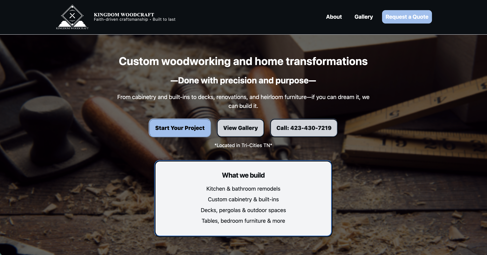

Put the work first.
The site was structured to showcase projects clearly so visitors could immediately understand the quality and range of the craftsmanship.

Case Study
Building a clean, professional online home for a custom woodworking business so the craftsmanship could be seen clearly.
View Live Site
The Challenge
Kingdom Woodcraft had beautiful custom work, but needed a website that made the business feel professional, trustworthy, and easy to understand.
The goal was to create a simple, clean site that put the craftsmanship front and center while giving potential customers a clear way to view the work and reach out.
The Strategy
The site was structured to showcase projects clearly so visitors could immediately understand the quality and range of the craftsmanship.
Navigation and page flow were kept clean so potential customers could quickly browse, understand services, and take the next step.
The design created a stronger first impression and gave the business a more polished, professional home online.
The Outcome
The final site gave Kingdom Woodcraft a professional place to send potential customers and a clearer way to present the work behind the business.
Visitors can browse the work and quickly see the quality of the craftsmanship.
The site makes it easier for potential customers to understand what to do next.
The business now has a stronger first impression online that better reflects the quality of the work.
Project Snapshot
What This Project Demonstrates
When the craftsmanship is already strong, the website should not get in the way. It should frame the work clearly and help the right people take the next step.
Kingdom Woodcraft ProjectYour Story Next
If your work is solid but your online presence does not reflect it yet, we can build something clearer, stronger, and easier for people to navigate.
Start a Project